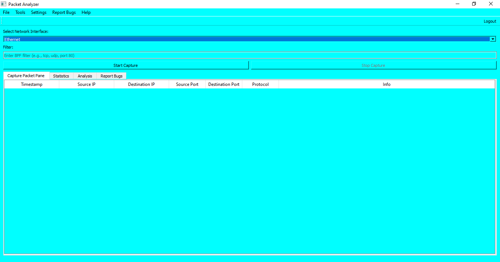
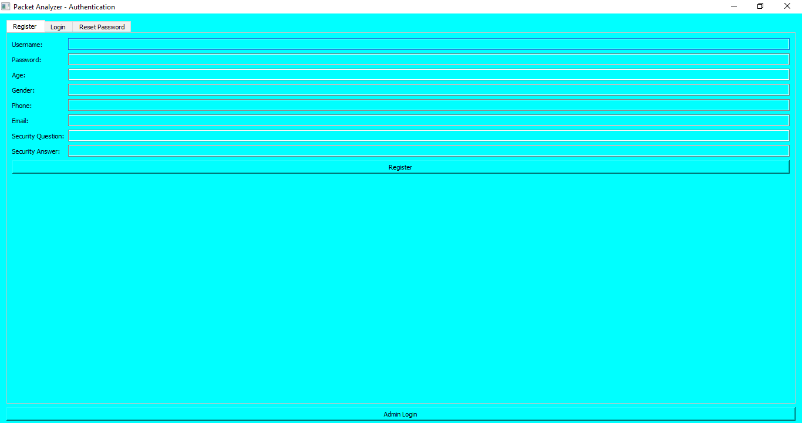
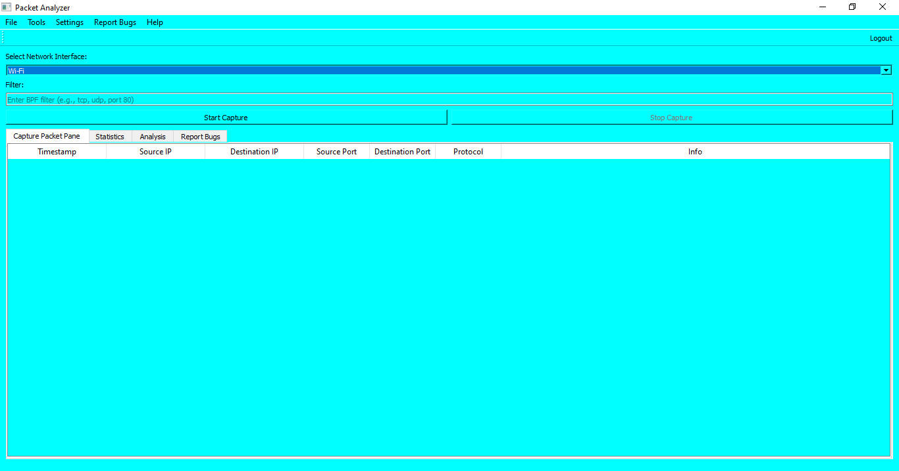

Packet Analyzer Tool is a comprehensive network analysis tool designed for security professionals, network administrators, and IT specialists. It provides real-time network traffic monitoring with deep packet inspection capabilities.
Key Features
Real-time packet capture with advanced filtering capabilities
Protocol analysis for over 23 common network protocols
User authentication system with role-based access control
Comprehensive reporting with export to multiple formats
Admin dashboard for user and system management

Figure 1: Packet Analyzer Tool Main Interface
Installation Guide
System Requirements
Windows 10/11, macOS 10.15+, or Linux (Ubuntu/Debian recommended)
4GB RAM minimum (8GB recommended for large captures)
500MB disk space
Administrative privileges for packet capture
Windows Installation
Download the installer package from my Github
Run the PacketAnalyzerTool.exe file
Follow the installation wizard instructions
Launch the application from the Authentication Menu
Linux/macOS Installation
# Clone the repository
git clone https://github.com/Illusivehacks/doc-for-packet-analyzer.git
# Install dependencies
pip install -r requirements.txt
# Run the application
python main.py
Note: On Linux systems, you may need to install libpcap headers first: sudo apt-get install libpcap-dev
Authentication System
The Packet Analyzer Tool features a secure authentication system with multiple layers of protection.

Figure 2: Authentication Interface
User Registration
To create a new account:
Click on the "Register" tab
Fill in all required fields (username, password, security questions)
Click "Register" to create your account
Security Tip: Choose a strong password and remember your security answers as they are required for password recovery.
Admin Access
Administrators have additional privileges:
Manage user accounts
View system logs
Configure application settings
Access all captured data
Packet Capture
Advanced packet capturing capabilities with multiple interface support and real-time filtering.
Capture Features
Multiple interface selection
BPF (Berkeley Packet Filter) support
Real-time traffic visualization
Capture session management
Starting a Capture
# Basic capture command
packet-analyzer start-capture and set berkeley packet filter

Figure 3: Packet Capture Interface
Pro Tip: Use BPF syntax for complex filters: host 192.168.1.1 and (tcp port 443 or udp port 53)
Packet Analysis
Deep packet inspection with protocol decoding and flow analysis.